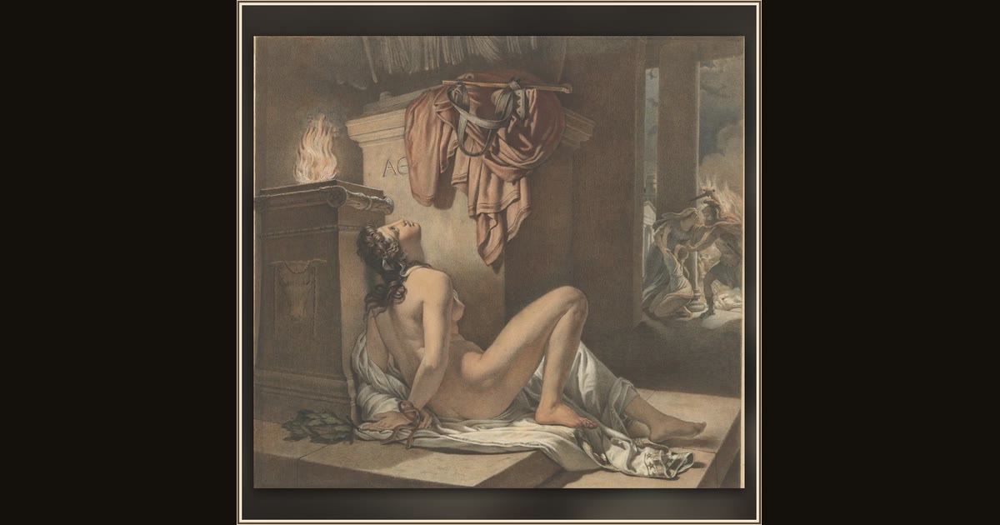

Cassandra Imploring Athena for Revenge Against Ajax
Jérôme Martin Langlois · 1810–38 · met
Cassandra reclines chained beside an altar, looking upward while figures struggle in the distance; Poseidon recalls Ajax dragging her away by force (69–71). Explore its place in Euripides's Plays, The Trojan Women, line 70.